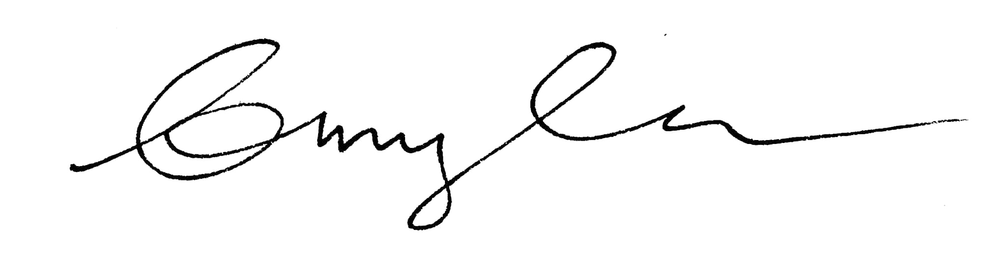

I am trained in architecture with backgrounds in environmental and educational design. I have found that architecture has the ability to be literal in its meaningfullness when it is guided with careful thought and hands.
I am a recent graduate from the University of Oregon with a masters in architecture and a specialization in sustainable urban design. Previously, I pursued by undergraduate degree at Roger Williams University in architecture with concentrations in sustainability, and art & architectural history.
When I am not in an office one can find me running trails on the hottest days, snowboarding Mt. Hood when it’s cold, or patiently stippling away in a sketch book. I look forward to connecting and can guarantee we will get along if you are a fan of punny jokes.
